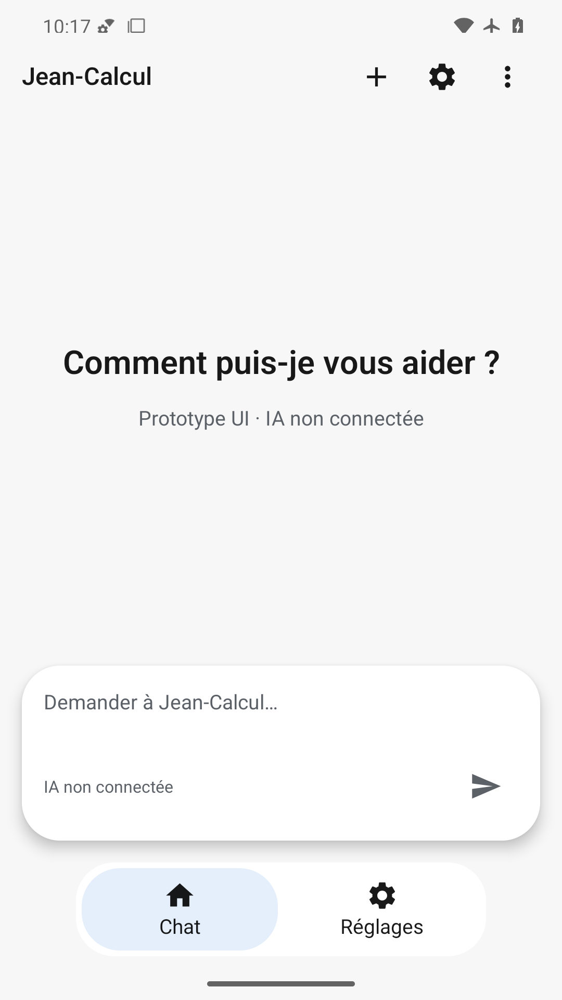
En-tête et trois actions présents ; invitation centrée, indication de saisie dans une capsule blanche distincte, destinations et barre système dégagées.
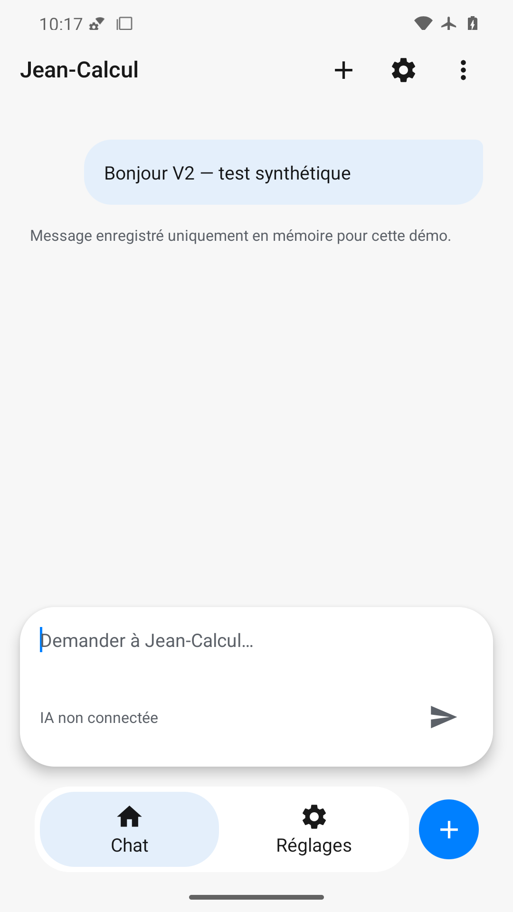
Bulle sortante asymétrique lisible, avertissement mémoire explicite ; champ vidé avec indication, curseur visible, navigation et plus bleu complets. En-tête confirmé par extraction des pixels supérieurs.
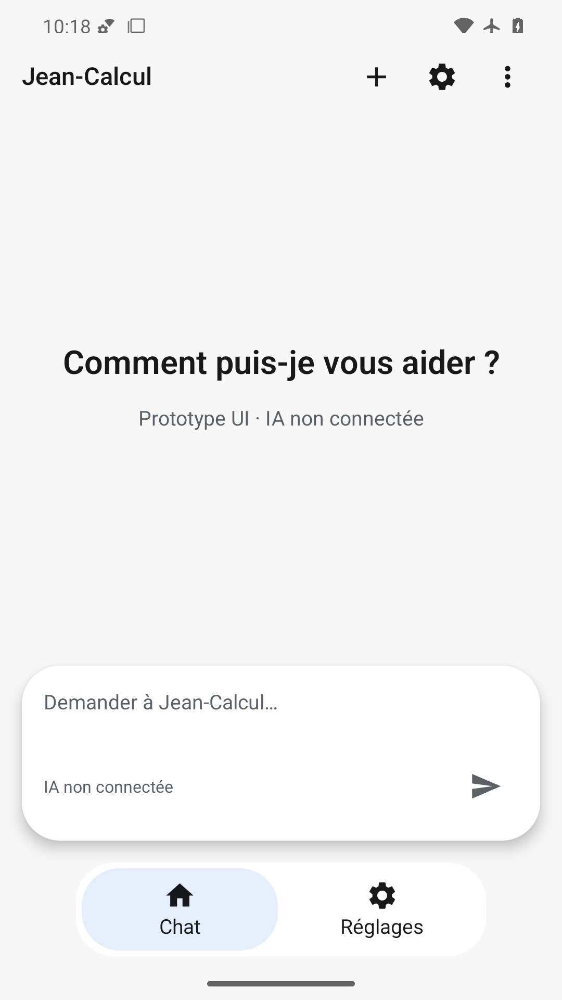
Accueil rétabli sans ancien message ; indication du champ, en-tête et les deux destinations présents.
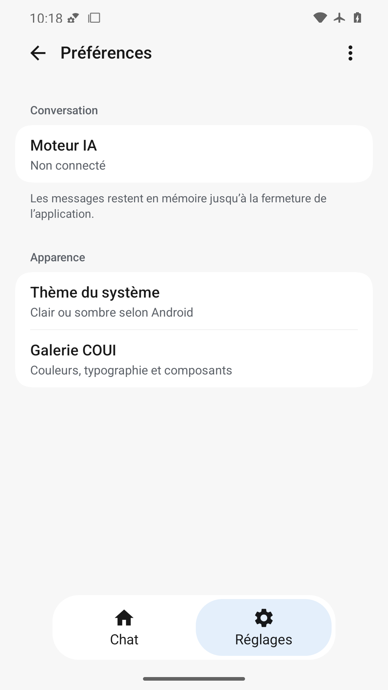
Préférences avec retour, deux groupes blancs et séparateur lisibles ; résumés non tronqués, Réglages sélectionné, insets respectés.
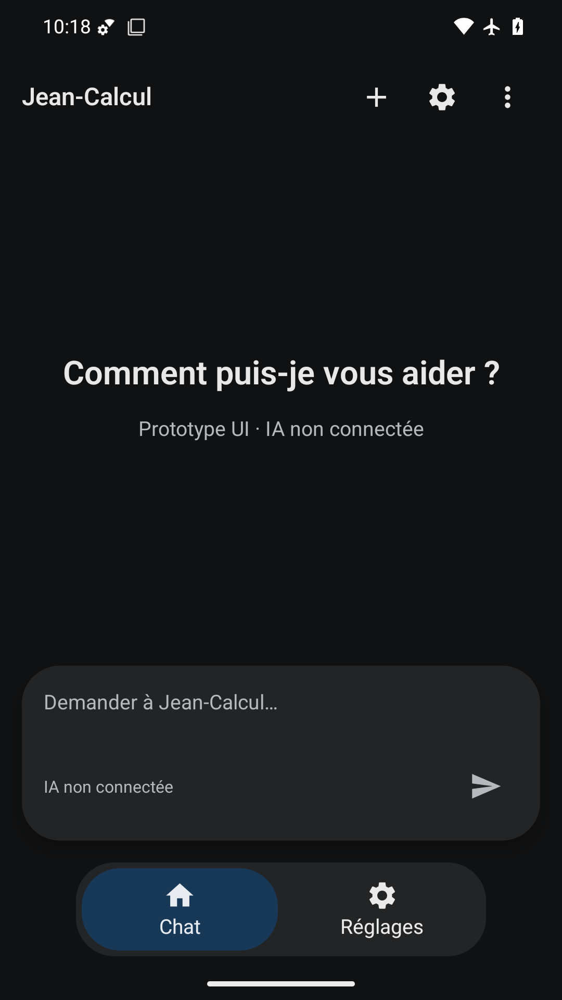
Hiérarchie conservée sur fond noir et capsules anthracite ; textes clairs, état sélectionné bleu sombre et icônes visibles.
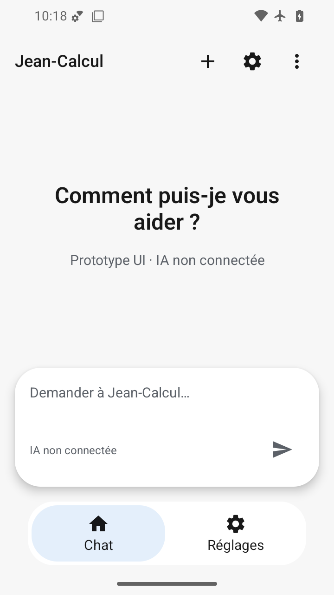
Invitation sur deux lignes sans coupe ; saisie, envoi et destinations tiennent dans la hauteur réduite avec marges système.
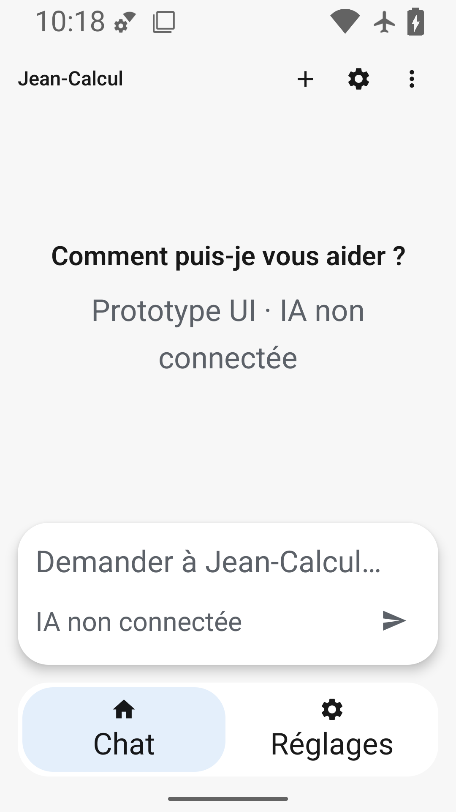
Texte de description et saisie agrandis sans recouvrement ; destinations restent distinctes. Toolbar/PageTitle fixes : limite alpha7 documentée.
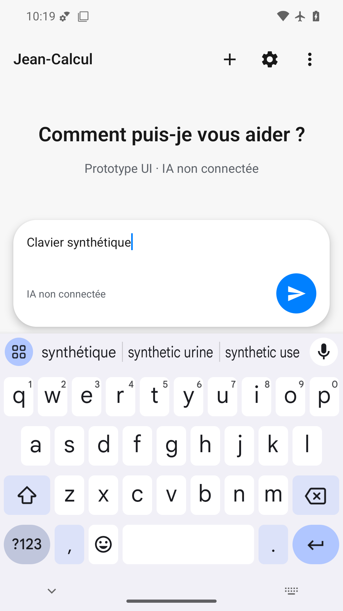
Clavier visible et champ saisi au-dessus avec envoi bleu accessible. En-tête Jean-Calcul et ses trois actions effectivement présents dans le PNG : contrôle natif du recadrage supérieur et de la planche des en-têtes. L’affichage initial de l’image entière avait conduit à une fausse interprétation.
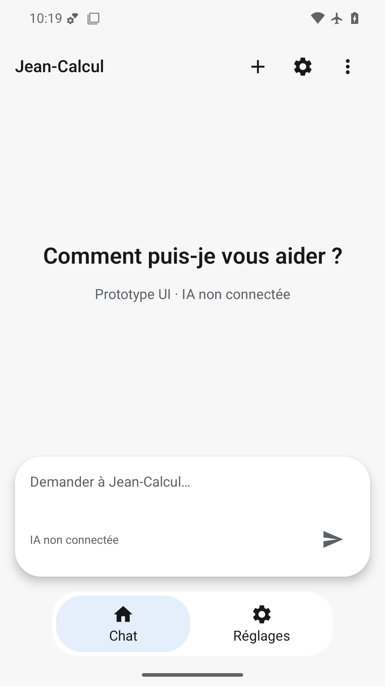
État final complet, invitation, indication du champ et navigation lisibles ; en-tête confirmé dans les pixels supérieurs. Fluidité non évaluée par une capture.
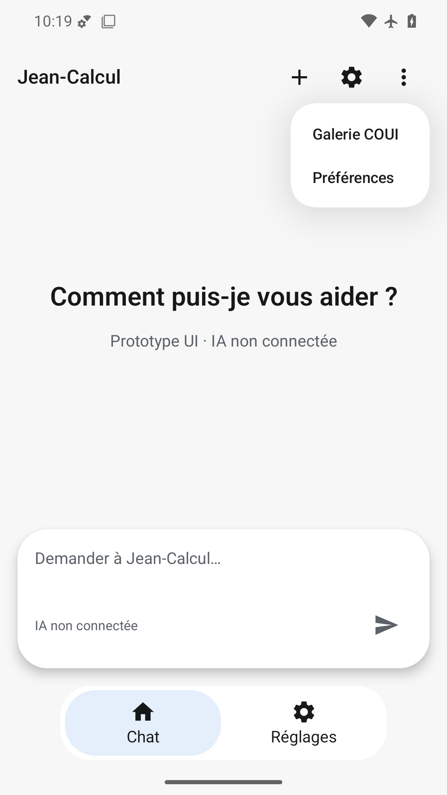
Menu COUI blanc avec deux entrées espacées, superposé sans masquer la saisie ni la navigation ; actions supérieures présentes.
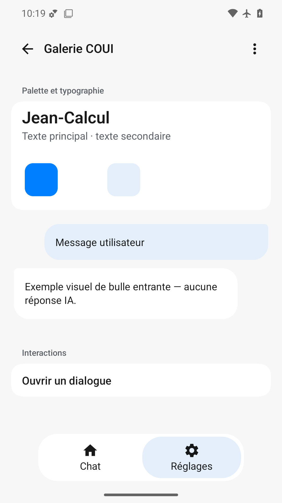
Palette bleue et typographie, deux directions de bulles explicitement illustratives et action dialogue lisibles. Navigation et retour présents ; nuancier blanc faiblement distinct du fond blanc, limite mineure.
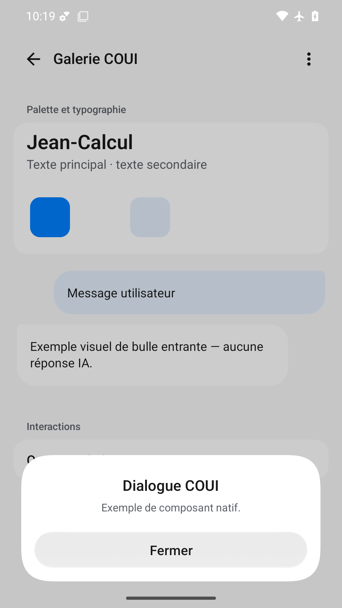
Fond assombri et dialogue COUI blanc lisible ; titre, explication et large bouton Fermer sans coupe, barre système séparée.
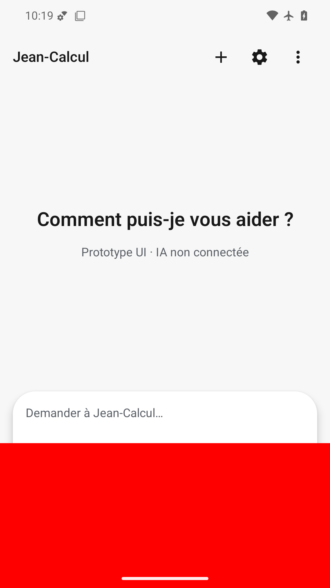
Défaut volontaire détecté : rectangle rouge opaque couvrant le bas de la capsule, la commande envoi et la navigation. Interaction bloquée.